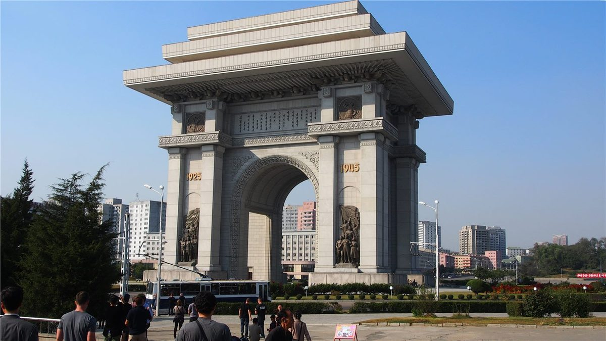

시진핑, 7년 만의 방북 마무리… 김정은 직접 환송 '중조 우의 새 장'

環球網 등 중국 매체에 따르면 시진핑 주석은 1박 2일의 국빈 방북 일정을 마무리하고 평양을 떠났다. 김정은 위원장은 환송 의식을 직접 열어 예우를 갖췄으며, 중국 매체들은 '중조(中朝) 우의의 새 장'이라는 표현으로 이번 방문을 평가했다.
광고 문의 · 300×250레드카펫에서 전나무 식수까지
시 주석은 지난 8일 평양 순안공항에 도착해 방북 일정을 시작했다. 공항에는 붉은 카펫과 함께 대형 오성홍기와 인공기가 내걸렸고, 환영 문구가 한국어와 중국어로 함께 게시됐다. 김 위원장이 공항에서 직접 영접한 데 이어, 두 정상 부부가 소규모 오찬을 함께하는 등 일정 내내 밀착 예우가 이어졌다.
상징적 장면도 많았다. 두 정상은 양국 우의를 상징하는 전나무(樅樹)를 함께 심었고, 중국 매체들은 '전나무는 늘 푸르고, 중조 우의는 생생불식(生生不息)'이라는 제목으로 이를 집중 조명했다. 시 주석은 조선노동당 중앙간부학교를 참관하기도 했다.
의제: 경제협력과 한반도 정세
정상회담에서는 양국 관계 발전과 경제협력 확대, 한반도를 둘러싼 정세가 핵심 의제로 다뤄진 것으로 보도됐다. 구체적 합의 내용은 단계적으로 공개될 전망이다. 중국 최고지도자의 방북은 2019년 6월 이후 7년 만으로, 그 자체로 양국 관계의 복원력을 보여주는 장면이라는 평가가 나온다.
이번 방문은 한반도 주변 외교가 활발해지는 시점에 이뤄졌다. 같은 주 브뤼셀에서는 한국과 유럽연합(EU)이 정상회담을 열었고, 미중 간에도 고위급 접촉 신호가 이어지고 있다. 동북아 각국의 정상 외교가 동시다발로 움직이는 국면이다.
제3의 시각: 각자의 해석
중국 매체는 이번 방문을 전통 우의의 계승으로, 한국과 서방 언론은 한반도 정세와 공급망·안보 구도에 미칠 영향에 초점을 맞춰 각각 다르게 읽는다. 華橋時報는 어느 한쪽의 해석에 기대지 않고, 확인된 일정과 발표를 사실대로 전한다. 한국에 사는 화인 독자에게 양국 관계의 안정은 곧 생활과 사업 환경의 안정이기도 하다.
· 環球網
· 人民日報
· RFA·연합 등 종합